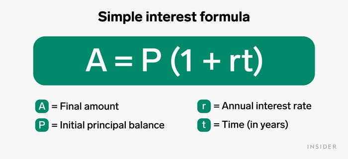

In this part, we will make comparison of simple interest and compound interest.
“In this graph, you can now see the difference between simple and compound interest, and how the different rate of growth can accumulate overtime. “
Before you leave this course, we want to invite you to ponder over the following two open-ended questions that you may encounter in practical contexts. Think carefully first and compare your ideas with the insights we provide. You can do it!
Is compound interest always better than simple interest?
> Not necessarily. The principal amount, rate of interest, as well as the number of years a person invests impacts the final accumulated amount. Starting off with a large principal and doing simple interest, might lead to more total money accumulated, than starting with a low principal and compounding it for the same amount of time. It will depend on your variables, so it is always good to use the skills you have learnt to predict and plan your future finances!
Final Message:
Now you have learnt the basics of how to calculate simple and compound interest and some differences between them. We hope it helps you in managing your own finances in the future, and ways to grow your money! Happy Calculating.